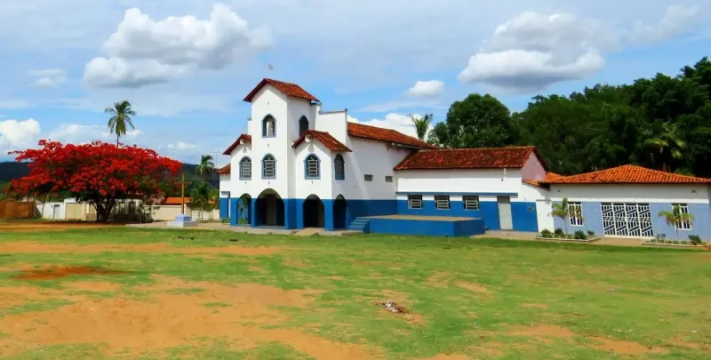

Sobre o local
Foi no antigo Brejo do Salgado, hoje Brejo do Amparo, que nasceu a história de Januária. Considerado o povoado mais antigo da região, o local guarda vestígios históricos e manifestações culturais de grande valor. Seus casarios coloniais dão um charme especial à paisagem, enquanto a produção artesanal de cachaça consagra o distrito como referência nacional. No Roteiro da Cachaça, especialmente na comunidade de Sítio, o visitante pode acompanhar todo o processo de fabricação: do corte da cana nos canaviais à destilação e, finalmente, ao envelhecimento em dornas de madeira, geralmente de umburana, que conferem aroma e sabor singulares à bebida.
A tradição cultural também pulsa forte no Brejo do Amparo. É de lá que surgem algumas das principais apresentações teatrais ao ar livre de Januária, como a Cavalhada, espetáculo que recria as batalhas medievais entre mouros e cristãos na Península Ibérica, e a Paixão de Cristo, encenada na Semana Santa, que mantém viva a fé e a tradição religiosa da comunidade.
A natureza completa o cenário. No Morro do Brejo do Amparo, o visitante encontra o Mirante, de onde se descortinam vistas privilegiadas da cidade e do majestoso Rio São Francisco. E para coroar o valor histórico do distrito, é ali que se ergue a Igreja de Nossa Senhora do Rosário, datada de 1688 e considerada uma das mais antigas de Minas Gerais.
Brejo do Amparo é, sem dúvida, um destino imperdível para quem deseja vivenciar de perto a beleza, a cultura e o acolhimento que tornam Januária única.
Dica: Para aproveitar melhor o passeio e enriquecer sua experiência, contrate um guia local: Clique Aqui
Horário de funcionamento: Visitação livre diariamente
Tipo de visita: Visita livre
Formas de pagamento: Não há cobrança para acesso
Pet Friendly: Não há